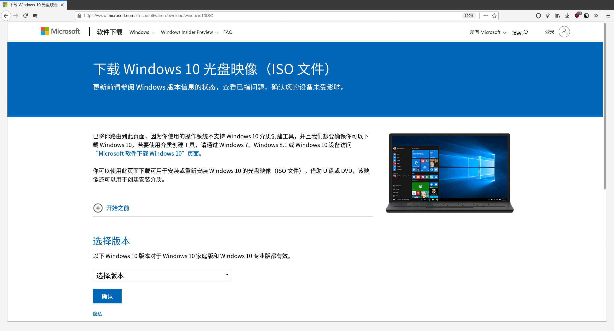
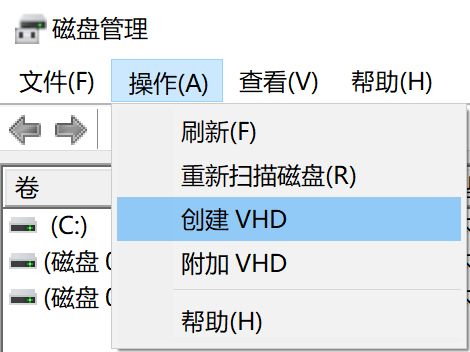
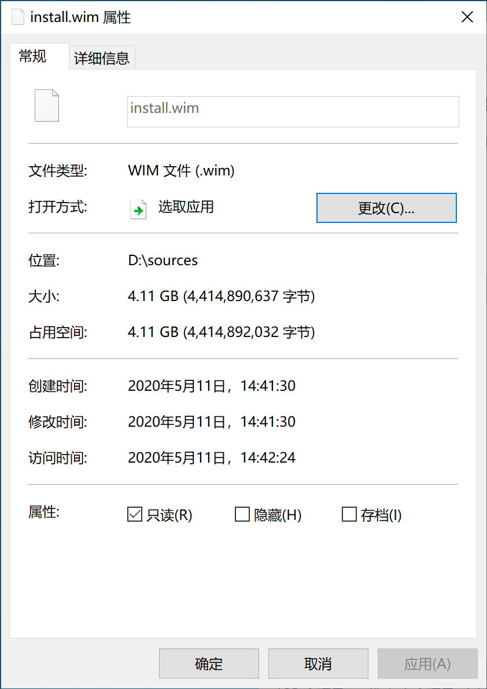
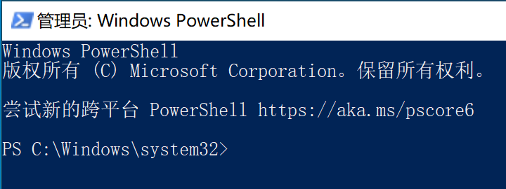
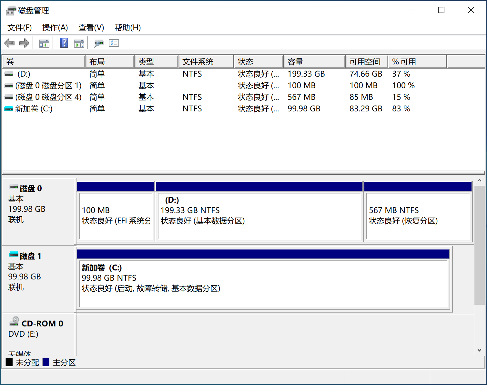
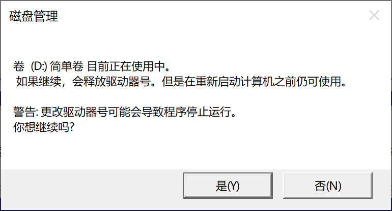
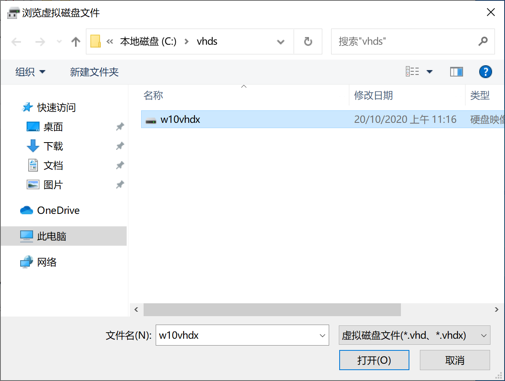
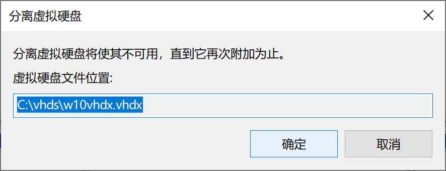

使用 VHD(X) 部署原生多系統 ^
這是一篇進階文章。 為了保證簡潔，本文會講解更少的基礎操作，而更注重細節和原理；儘管如此，noarch 也會盡量解釋清楚每一個必要的步驟。
在閱讀本文之前，你應該已經瞭解了監考軟體，虛擬機器，虛擬磁碟以及 Windows 啟動的基本概念，並且熟悉 Windows 命令列的基本操作。如果你還沒有，點選前面的連結來了解。
noarch 的碎碎念
這篇文章開始編寫時 (2020-10), 北美的 COVID-19 疫情依然水深火熱：美國依然以每天 5w+ 確診病例 穩 步 增 長 ，加拿大部分省份則見明顯反彈。
你可能會疑惑：為什麼 noarch 要在一篇 IT 文章上講 COVID-19?
原因是 COVID-19 “使得間諜軟體合法化，並且學校強迫讓學生安裝他們” (Forbes, EFF).
簡單來說：因為 COVID-19 疫情，學生需要完全上網課，同時也要在網上考試；而“為了防止考試作弊”，學校強制學生在考試時安裝“監考軟體”。
幸運的是，noarch 所在的高中依然部分開放，考試照常在學校進行，不需要面對監考軟體。然而最近有大學的朋友給我發了這張圖：

這張圖裡，她嘗試在 VMware Fusion 虛擬機器裡執行監考軟體；意料之中的是，監考軟體檢測到了虛擬機器的存在並且拒絕啟動。
如果你不知道對客戶機隱藏虛擬化狀態的方法，或是 noarch 將要介紹的使用 VHD 原生啟動 Windows, 在 due date 的催促下，你可能就高掛白旗，在日常使用的系統乖乖裝上了監考軟體。
目標和限制
軟體可以通過多種方法檢測自己是否在虛擬機器內執行。
例如 al-khaser 就是一個檢測虛擬機器 / 偵錯程式的 demo. 這個 demo 會通過檢測 CPU 是否虛擬，檢測虛擬裝置及其驅動的存在等方法判斷虛擬機器的存在。
要繞過所有這些虛擬機器檢測非常複雜；因此人們也用多系統來隔離自己的軟體，身份和資料。
傳統的多系統雖然不是很複雜，但非常麻煩，也不夠靈活：你需要給磁碟分割槽；根據你啟動方式的不同，你需要用不同方法配置啟動引導器...
微軟在 Windows 7 及以後提供的虛擬磁碟啟動功能則是在虛擬機器和多系統之間的一個詭異“縫合怪”。它有著虛擬磁碟的便利性（快照功能）以及原生多系統的效能優勢，並且不常被檢測為虛擬機器。
使用虛擬磁碟啟動時，Windows 啟動引導器會掛載虛擬磁碟並啟動虛擬磁碟內的 Windows; 除此之外，虛擬磁碟內的 Windows 會直接使用所有物理硬體。 如果你接觸過傳統多系統，下面是虛擬磁碟啟動和傳統多系統的一些區別：
相比傳統多系統
- 因為基於虛擬磁碟，能像虛擬機器一樣建立“快照”
- 無法“休眠”（暫停到磁碟）
- 但“睡眠”（暫停到記憶體）依然可用
- 無法更新 Windows 的大版本（例如 Windows 10 1909 升級到 2004）
- 位於虛擬磁碟內的 Windows 必須是專業版以上（專業版(N)，企業版(N)，教育版(N)...）
相比虛擬機器
- 能直接利用物理硬體，效能損失少
- 較少被檢測為“虛擬機器”
- 無法控制軟體對硬體的訪問
- 無法完全控制軟體對你“主系統”資料的訪問
其它限制
- 用來啟動的虛擬磁碟，以及儲存這個虛擬磁碟檔案的物理磁碟不能使用“動態分割槽”（一個微軟專有的分割槽表格式）
- 虛擬磁碟檔案不能位於一個 Samba 分享（網路卷）上
- 儲存這個虛擬磁碟檔案的物理卷不能使用 BitLocker 加密
- 儲存這個虛擬磁碟檔案的物理卷必須是 NTFS 或 exFAT (Windows 10 1809+) 格式
別怕，如果你沒有聽說過上述的功能，那麼你大概率不需要這些功能，因此虛擬磁碟多系統非常適合你；如果你是上述功能的使用者，你知道如何應對 ;)
先決條件
你需要準備：
- 一個執行著 Windows 10 的 PC
- Windows 10 on ARM 和 Windows 10 S 不支援多啟動
- 至少 20GiB 的磁碟空閒空間，noarch 建議至少保留 60 GiB 以便安裝應用
- 不按流量計費的網路，因為你將要下載約 5GiB 的 Windows 安裝映象
- 該 PC 的“管理員” (Administrators) 許可權
- 約 20 分鐘的空閒時間
我們開始吧！
下載 Windows 安裝映象
在虛擬磁盤裡安裝 Windows 就像在虛擬機器裡安裝 Windows. 首先你需要準備一個 iso 格式的 Windows 安裝映象。
你可以通過多種方法向微軟獲得 Windows 安裝映象，例如“媒體建立工具”：

或者只為非 Windows 電腦開放的直接 iso 下載。

這兩種方式 noarch 就不在此贅述；你可以在等待下載的同時進行下一步。
建立虛擬磁碟檔案
接下來你需要建立一個虛擬磁碟 vhdx 檔案。
右鍵點選 鍵，或是按 + X，在彈出的選單中選擇“磁碟管理”：
如果你當前在使用一個標準賬戶，你需要以管理員開啟
PowerShell/CMD然後從那執行diskmgmt.

要建立一個虛擬磁碟，點選選單欄的“操作”- “建立 VHD”：

然後在彈出的窗口裡選擇 VHDX - 動態擴充套件，指定 VHD 的最大大小，然後選擇虛擬磁碟檔案的儲存位置。
VHD的最大大小不能超過物理磁碟當前可用的空間大小。
如果你打算在虛擬磁盤裡安裝的是 Windows 7, 因為 Windows 7 無法從
VHDX啟動，你應該使用VHD作為虛擬磁碟格式。


填寫完成後點選“確定”，你就可以在“磁碟管理”中看到新新增的虛擬磁碟了：
就像物理磁碟一樣，你也需要初始化一個虛擬磁碟：為其建立一個分割槽表，然後建立一個分割槽。
右擊左側的“沒有初始化”，選擇“初始化磁碟”；然後在彈出的視窗點選“確定”。

這步做完後你就得到了一個準備被分割槽的磁碟：

接下來你就可以按照正常的方法給這個虛擬磁碟分割槽。noarch 在這裡只給虛擬磁碟建立一個 NTFS 分割槽：

在“新建簡單卷嚮導”裡一路點選“下一步”，你就得到了一個可用的虛擬磁碟分割槽。

虛擬磁碟的最大大小不能超過當前磁碟可用空間的大小。這是因為虛擬磁碟內的 Windows 在啟動時會為了防止磁碟寫入錯誤，將自己擴充套件到虛擬磁碟的最大大小，並在關機時將自己縮小到實際資料量的大小。
“解壓” Windows
接下來是本文最重要的一步：將 Windows 解壓到虛擬磁盤裡。
這是 noarch 想要寫這篇文章的主要原因：noarch 找到的描述在虛擬磁盤裡安裝 Windows 的現有中文文章，均使用某種第三方工具或指令碼將 Windows “解壓”到目標虛擬磁碟。這些工具多數只為對應的教程所寫，沒有被長期維護，不夠可靠。
實際上你可以使用 Windows 自帶的工具 DISM 簡單地“解壓” Windows 安裝映象。
首先，在檔案資源管理器裡裝載你剛剛下載的 Windows 安裝光碟：

然後你就可以在“此電腦”裡看到“一個新光碟的插入”。

你可以右擊然後“開啟”（不是“從媒體安裝或執行程式”）剛剛裝載的 iso 映象。
如果你是直接下載的 iso, 你可以在裝載的“光碟”裡找到 sources\install.wim.
如果你是使用“媒體建立工具”建立的
iso, 這個檔案則會是install.esd而不是install.wim.如果你的是
install.esd, 請將下面所有命令中install.wim替換成install.esd.
+ X, 用管理員許可權開啟 Windows PowerShell 或 CMD:


我們接下來會用 DISM 來檢視和“解壓”這個映象。
install.wim 是一個 WinImage 映象；WinImage 是微軟在 Windows Vista 釋出時推出的一個映象格式。
其一個重要特性是可以在一個映象中差分多個子映象，而不顯著增加主映象的大小。因此，它取代了 Windows XP 及之前的檔案複製，專門用來包裝 Windows, 使得多個不同的 Windows 版本 (edition) 可以被包裝在一個安裝光盤裡。
同樣地，我們下載的 Windows 10 安裝映象中的 WinImage 映象也包含多個版本；你在“解壓”時需要選擇一個 Windows 版本，在 PowerShell 裡執行這個命令來列出 install.wim 的所有子映象：
dism /Get-ImageInfo /ImageFile:[你的 install.wim 位置]
你需要將上方的
[你的 install.wim 位置]替換成你install.wim的實際位置。同樣你也需要替換所有後續使用方括號[]引用的數值。
這是 noarch 的執行結果：
PS C:\Windows\system32> dism /Get-ImageInfo /ImageFile:D:\sources\install.wim
部署映像服務和管理工具
版本: 10.0.19041.329
映像詳細資訊: D:\sources\install.wim
索引: 1
名稱: Windows 10 家庭版
描述: Windows 10 家庭版
大小: 14,691,877,788 位元組
索引: 2
名稱: Windows 10 家庭單語言版
描述: Windows 10 家庭單語言版
大小: 14,691,375,165 位元組
索引: 3
名稱: Windows 10 教育版
描述: Windows 10 教育版
大小: 14,935,497,806 位元組
索引: 4
名稱: Windows 10 專業版
描述: Windows 10 專業版
大小: 14,935,765,881 位元組
索引: 5
名稱: Windows 10 專業教育版
描述: Windows 10 專業教育版
大小: 14,935,436,224 位元組
索引: 6
名稱: Windows 10 專業工作站版
描述: Windows 10 專業工作站版
大小: 14,935,467,015 位元組
操作成功完成。
在執行完上述命令後請選擇 困難 一個 Windows 版本，並記住它的“索引”號。
noarch 在這裡選擇 “Windows 10 專業工作站版”子映象，其“索引”是6.
關於 Windows 10 各個版本 (edition) 的區別，請見 https://www.microsoft.com/zh-cn/WindowsForBusiness/Compare.
記住索引後，你可以用一行命令將 Windows “解壓”到虛擬磁碟內：
dism /Apply-Image /ImageFile:[你的 install.wim 位置] /Index:[你選擇的版本“索引”] /ApplyDir:[你虛擬磁碟的碟符] /Verify /Check-Integrity
上方命令選項的含義：
/Apply-Image: 應用（“解壓”）指定的映象/ImageFile:: 指定要處理的映象位置/Index:: 指定子映象的索引
/ApplyDir:: 指定“解壓”的目標目錄/Verify: 在複製後驗證結果正確/Check-Integrity: 驗證映象的完整性
在上方的
DISM命令裡，許多選項具有從屬關係。例如你不能將/Index:移動到/ApplyDir後面，因為/Index:從屬於/ImageFile:. 如果你執行時出錯了，建議你檢查一下選項的順序。
在 noarch 的例子裡，是執行這個命令：
dism /Apply-Image /ImageFile:D:\sources\install.wim /Index:6 /ApplyDir:E: /Verify /Check-Integrity
執行這行命令，稍等片刻，DISM 就會開始將 Windows “解壓”到虛擬磁碟：
PS C:\Windows\system32> DISM /Apply-Image /ImageFile:D:\sources\install.wim /Index:6 /ApplyDir:E: /Verify /Check-Integrity
部署映像服務和管理工具
版本: 10.0.19041.572
正在應用映像
[================ 28.0% ]
根據你的 PC 配置，“解壓”的過程會消耗 5 ~ 20 分鐘。DISM 會在完成後返回：
部署映像服務和管理工具
版本: 10.0.19041.572
正在應用映像
[==========================100.0%==========================]
操作成功完成。
到此，我們安裝 Windows 的過程已經完成大半了。下面我們將要為新安裝的 Windows 新增一個啟動項，並且重啟進入新的 Windows 安裝進行配置。
配置啟動項
同樣在管理員許可權的 PowerShell 裡，執行：
bcdboot [你虛擬磁碟的碟符:]\Windows
上方命令選項的含義：
/d: 保留目前的預設啟動項，不將新啟動項設定為預設；這會保證 Windows 啟動引導器依然由安裝在物理磁碟的 Windows 提供。/l zh-CN: 設定新新增的啟動引導器語言為簡體中文。bcdboot命令新增的啟動項預設語言是美式英語en-us.- 如果你在安裝一個繁體中文 Windows, 請使用
/l zh-TW.
- 如果你在安裝一個繁體中文 Windows, 請使用
例如 noarch 的虛擬磁碟碟符為 E: , 這是我的執行結果：
PS C:\Windows\system32> bcdboot /d /l zh-CN E:\Windows
已成功建立啟動檔案。
這一步會將你在虛擬磁碟內的 Windows 新增到 BOOTMGR 的啟動選項裡。從現在起，你在開機時將需要選擇進入安裝在物理磁碟上的 Windows 或是虛擬磁碟上的 Windows.
理論上，這一步做完後，你就可以重啟，然後選擇新的 Windows 了；在啟動時你會看到“選擇作業系統”介面，其中含有 VHD 的就是你安裝在虛擬磁碟內的 Windows.

重新命名啟動項
為了更好地區分虛擬和物理磁碟中的作業系統，你可能想給剛剛新增的啟動項取一個不同的名字。要給啟動項改名，你需要用到 bcdedit.
在 BOOTMGR 的啟動項資料庫裡，每個啟動項都有一個唯一的 UUID; 要對一個特定的啟動項進行修改，你需要先獲取它們的 UUID.
不新增任何選項執行 bcdedit 將會獲取目前所有啟動項的資訊：
PS C:\Windows\system32> bcdedit
Windows 啟動管理器
--------------------
識別符號 {bootmgr}
device partition=\Device\HarddiskVolume1
path \EFI\Microsoft\Boot\bootmgfw.efi
description Windows Boot Manager
locale zh-CN
inherit {globalsettings}
default {current}
resumeobject {edd55b4c-0bc1-11eb-8106-a0043c6d1b90}
displayorder {edd55b4d-0bc1-11eb-8106-a0043c6d1b90}
{current}
toolsdisplayorder {memdiag}
timeout 30
Windows 啟動載入器
-------------------
識別符號 {edd55b4d-0bc1-11eb-8106-a0043c6d1b90}
device partition=E:
path \Windows\system32\winload.efi
description Windows 10
locale zh-CN
inherit {bootloadersettings}
isolatedcontext Yes
allowedinmemorysettings 0x15000075
osdevice partition=E:
systemroot \Windows
resumeobject {edd55b4c-0bc1-11eb-8106-a0043c6d1b90}
nx OptIn
bootmenupolicy Standard
Windows 啟動載入器
-------------------
識別符號 {current}
device partition=C:
path \Windows\system32\winload.efi
description Windows 10
locale zh-CN
inherit {bootloadersettings}
recoverysequence {edd55b42-0bc1-11eb-8106-a0043c6d1b90}
displaymessageoverride Recovery
recoveryenabled Yes
isolatedcontext Yes
allowedinmemorysettings 0x15000075
osdevice partition=C:
systemroot \Windows
resumeobject {edd55b40-0bc1-11eb-8106-a0043c6d1b90}
nx OptIn
bootmenupolicy Standard
在每個 "Windows 啟動載入器" 下的 識別符號 就是我們要用的 UUID.
device 行代表啟動項所使用的裝置；目前我們的虛擬磁碟依然在掛載狀態，所以 device 會返回當前虛擬磁碟被掛載到的碟符。在 noarch 的例子裡，它是 E:, 對應的 UUID 是 {edd55b4d-0bc1-11eb-8106-a0043c6d1b90}.
選中然後右擊滑鼠複製這個識別符號，然後執行：
bcdedit /set "[你的啟動項 UUID]" description "[啟動項描述]"
因為
PowerShell與CMD對待字串的方式不同， 在PowerShell裡，啟動項UUID以及描述需要用雙引號"或單引號'括起來。
在 noarch 的例子裡，這是我執行的實際命令以及結果：
PS C:\Windows\system32> bcdedit /set "{edd55b4d-0bc1-11eb-8106-a0043c6d1b90}" description "位於 VHDX 內的 Windows 10 專業工作站版"
操作成功完成。
操作完成後，你就可以重啟進入新安裝的 Windows 了。

配置新安裝的 Windows
重啟選擇新安裝的 Windows 後，Windows 可能會多重啟幾次；而這些重啟依然會通過原系統的啟動引導器進行，因此你需要在電腦前 坐和放寬 並且準備在啟動選單中選擇虛擬磁碟內的 Windows 安裝。
noarch 將不在此贅述 OOBE（開箱體驗），詳細的過程請看 OOBE 注意事項（未完成）。
啟用
如果你在一臺預裝了正版 Windows 的機器上安裝對應版本的 Windows（通常為 Windows 家庭單語言版），Windows 會讀取主機板韌體內的數字證書自動啟用。如果 Windows 沒有自動啟用，你需要購買一個 Windows 的授權。
因為法律原因（沒錯，求生欲挺強），noarch 將不描述使用 KMS 伺服器啟用的方法。
使用微軟®軟體正版授權 安全 穩定 聲譽
安裝驅動
進入 Windows 設定 -> 更新和安全 -> Windows 更新, 手動檢查更新。Windows 會通過 Windows Update 自動安裝關鍵的硬體驅動。
如果你要手動安裝驅動，虛擬磁碟內的 Windows 在驅動安裝上和直接在物理磁碟內安裝基本無異。
解除安裝 (unmount) 物理分割槽
永遠加密和備份高敏感性和珍貴的資料。 下面的方法只能避免常見的檔案操作，並不能阻止專門為了盜取或摧毀已解除安裝磁碟內資料的惡意軟體。
你應該不想這個系統內的應用讀取你直接儲存在物理磁碟內的檔案。然而 Windows 會自動掛載所有檢測到的磁碟和分割槽，使得所有的應用都能訪問其中的內容：

要解除安裝 (unmount, 取消裝載，而不是移除) 物理磁碟，你同樣需要使用磁碟管理 diskmgmt.

右擊你要解除安裝的分割槽，選擇“更改驅動器號和路徑”：

在彈出的窗口裡選中當前的驅動器號，然後“刪除”。同時你需要兩次確認操作：



對所有自動裝載的物理分割槽重複上述操作，你就能解除安裝所有想隔離的物理分割槽了。你甚至可以解除安裝包含著當前虛擬磁碟檔案的物理分割槽，而 Windows 依然能訪問這個虛擬磁碟檔案。

虛擬記憶體
如果你在上一步遇到了問題，原因很可能是 Windows 在你要解除安裝的物理捲上啟用了虛擬記憶體。要順利解除安裝，你需要先在禁止 Windo𥥈ws 在它們上面儲存虛擬記憶體分頁檔案。
在 效能選項（ + R -> SystemPropertiesPerformance.exe）-> 高階 -> 虛擬記憶體 -> 更改 ，取消選擇“自動管理所有驅動器的分頁檔案大小”。然後挨個選擇你要解除安裝的分割槽，然後選擇“無分頁檔案”：
Windows 不支援在虛擬磁碟存放虛擬記憶體分頁檔案；因此，如果你需要使用虛擬記憶體，請至少保留一個物理卷的掛載。
沒有物理卷存放虛擬記憶體，Windows 會在沒有虛擬記憶體的情況下執行。如果你 PC 的記憶體較少 ( <=4GiB ), 你可能需要注意記憶體的使用，以免記憶體不足，應用無法啟動或正常執行。
在另一個 Windows 中訪問虛擬磁碟
安裝完成之後，要在另一個 Windows 中訪問這個虛擬磁碟內的檔案，你需要手動掛載該虛擬磁碟。
開啟磁碟管理 diskmgmt, 在頂部選單點選 操作 -> 附加 VHD:


選擇你之前建立的 vhdx, 點選“確定”。


你就可以在檔案資源管理器中訪問這個虛擬磁碟了。
這個虛擬磁碟會在重啟時被解除安裝；你也可以在訪問完後手動解除安裝該虛擬磁碟。
在磁碟管理中右擊掛載過的虛擬磁碟，選擇“分離 VHD”：

然後確認。
如果 Windows 提示該磁碟正在被佔用，關閉所有檔案資源管理器的視窗，再試一次。

操作差分虛擬磁碟 / 快照
建立
就像其它的虛擬地盤格式，你也可以通過差分 VHD 來為虛擬磁碟內的系統建立“快照”。
你需要用到 Windows 的命令列磁碟管理工具 diskpart.
以管理員許可權開啟 PowerShell, 啟動 diskpart:
PS C:\Windows\system32> diskpart
Microsoft DiskPart 版本 10.0.19041.1
Copyright (C) Microsoft Corporation.
在計算機上: DESKTOP-JPN5V0H
DISKPART>
在 diskpart 裡建立一個拆分 vhd:
DISKPART> create vdisk file=[你要建立的拆分 VHD 位置] parent=[原 VHDX 位置]
例如：
DISKPART> create vdisk file=C:\vhds\w10vhdx-diff.vhdx parent=C:\vhds\w10vhdx.vhdx
100 百分比已完成
DiskPart 已成功建立虛擬磁碟檔案。
然後你需要按照在另一個 Windows 中訪問虛擬磁碟中的步驟掛載此差分虛擬磁碟。
建立完成後，你需要重複配置啟動項和重新命名啟動項中的步驟，並將這些步驟中的虛擬磁碟檔案換成你剛剛建立的拆分虛擬磁碟。
將拆分虛擬磁碟新增到啟動項後，你在啟動到虛擬磁碟時，需要選擇拆分虛擬磁碟，而不是源虛擬磁碟：

如果你在這時從源虛擬磁碟啟動，你由此建立的所有差分磁碟將會失效。
恢復
要恢復“快照”，只需要刪除你在“建立快照”時使用的差分磁碟，然後刪除其啟動項：
bcdedit /delete "[你的啟動項 UUID]"
例如：
bcdedit /delete "{6e430704-1163-11eb-b935-d3152726ad7a}"
最後再次按照建立中的步驟建立新的拆分磁碟。
總結
最後 noarch 再次提醒，VHD 以及其它雙系統手段不能作為對惡意軟體的防護。
它能做到的，是提升軟體訪問你資料的門檻，以及防止軟體註冊後臺服務實時監控你的行為。
光看不做沒用，如果你面對監考軟體或“不想用卻必須要用”軟體的威脅，現在就去試試吧。